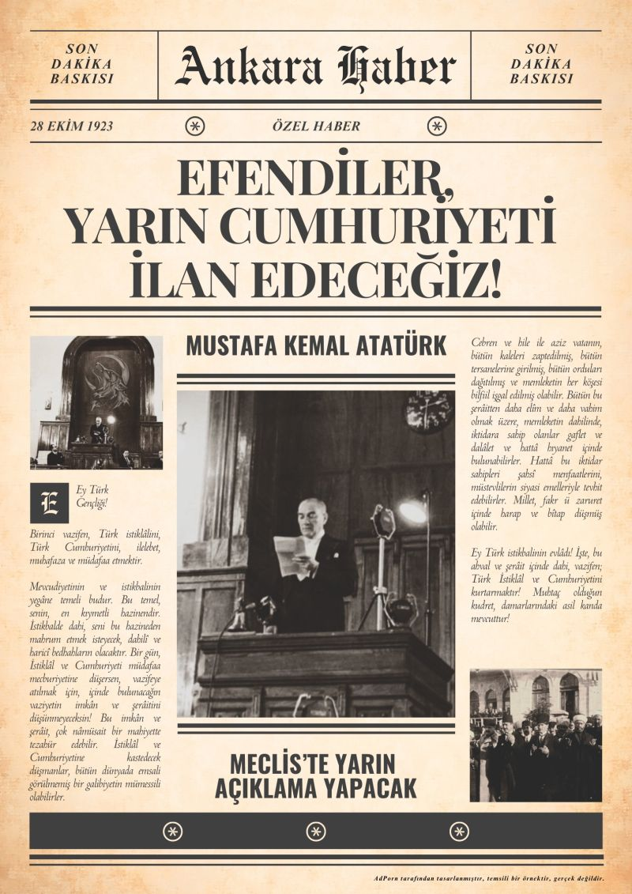

29 Ekim Cumhuriyet Bayramı Kutlu Olsun 🇹🇷

29 Ekim, Türkiye için yalnızca takvimde bir gün değil, bir milletin kaderini kendi ellerine aldığı günün yıldönümüdür. 1923'te Ankara’da, savaşın yorgunluğuna ve yokluğa rağmen umudunu yitirmeyen bir halkın iradesiyle Cumhuriyet ilan edildi; Mustafa Kemal Atatürk ilk Cumhurbaşkanı seçildi. Yeni kurulan bu devletin yol haritasında akıl ve bilim en başta yer aldı. Atatürk’ün “Hayatta en hakiki mürşit ilimdir, fendir” sözü, mühendisliğin de temelini oluşturan bu anlayışı özetler. Yollar, köprüler, fabrikalar, barajlar ve demiryolları, Cumhuriyet’in kuruluş yıllarından bugüne mühendislerin emeğiyle yükselen bir geleceğin parçası oldu. Bu yüzden 29 Ekim, aynı zamanda üretmenin, geliştirmenin ve bilimle ilerlemenin de bayramıdır. Cumhuriyet’in 103. yılında bu mirası korumak ve yarınlara daha güçlü taşımak hepimizin ortak sorumluluğudur. Cumhuriyet Bayramımız kutlu olsun!...